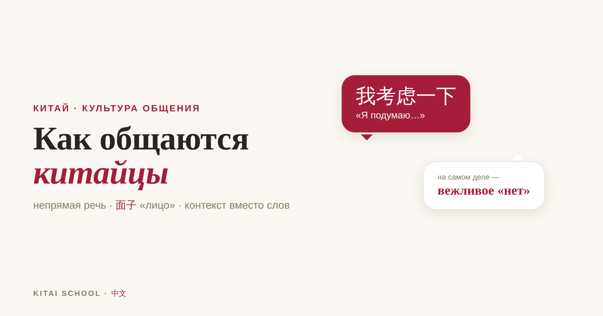
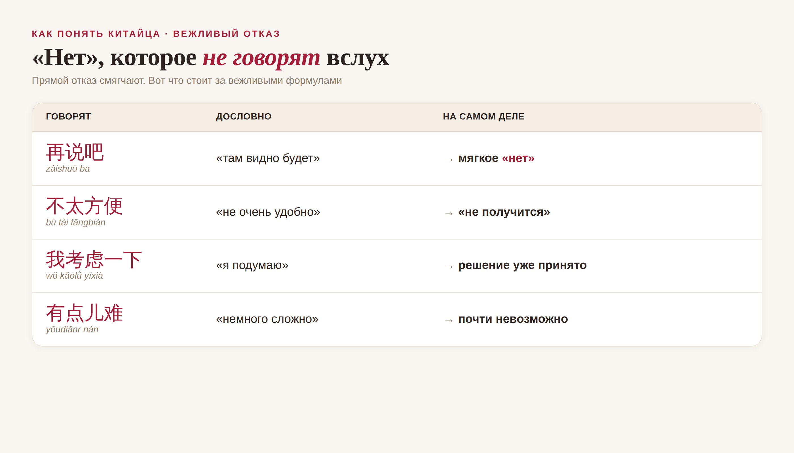

Как общаются китайцы: непрямая речь, «сохранение лица» и контекст вместо слов

Можно выучить тысячу иероглифов, свободно читать меню и всё равно не понять китайского собеседника. Потому что в Китае значительная часть смысла живёт не в словах, а вокруг них — в намёке, паузе, интонации и в том, кто, кому и при ком это сказал. Прямой отказ здесь считается почти грубостью, а вежливое «я подумаю» нередко означает твёрдое «нет».
Эта разница ломает больше переговоров и знакомств, чем незнание грамматики. Как понимать китайцев правильно и не обижать их по незнанию? Давайте разбираться.
Кому будет полезна статья
Всем, кто общается с китайцами — в поездке, на учёбе или в делах. Вы научитесь понимать, что стоит за словами собеседника, и перестанете портить отношения на ровном месте.
Что вы узнаете
Почему в Китае «да» не всегда значит «да»
Что такое 面子 («лицо») и почему его так берегут
Как звучит вежливый отказ — и как его распознать
Как статус, возраст и контекст меняют разговор
Какие правила помогут понимать китайцев и не обижать их
Ведь одно неверно понятое «подумаю» или спор при свидетелях могут стоить сделки или дружбы — а вы даже не поймёте, где именно ошиблись.
Почему в Китае «да» не всегда значит «да»
В одних странах принято говорить прямо: думай, что говоришь, и говори, что думаешь. В Китае — иначе. Здесь важное часто не произносят вслух: считается, что собеседник и так поймёт — по обстановке, по тому, кто и при ком говорит, по тону и по тому, о чём вы промолчали. Слова — только часть сообщения.
Отсюда знаменитое «китайское да», которое не равно согласию. 好的 (hǎo de) в ответ на предложение может значить «согласен», а может — «я тебя услышал, но давай не будем сейчас спорить». Чтобы различить их, китаец слушает не столько слово, сколько как оно сказано: с готовностью или с лёгкой заминкой, сразу или после паузы, с уточнением деталей или без.
Простое правило для начала: в Китае отсутствие твёрдого «да» — это чаще всего «нет». Если в ответ на просьбу вы слышите уклончивое «посмотрим», «это сложновато» или молчаливую улыбку — скорее всего, вам мягко отказали, просто не произнося обидного слова.
面子 (miànzi): «лицо» — главное в общении
面子 (miànzi) буквально — «лицо», а по сути это ваш социальный авторитет, репутация и достоинство в глазах других. В китайской культуре «лицо» есть у каждого, им дорожат, и вокруг него во многом строится общение. С «лицом» связаны три ключевых глагола:
Дать лицо — 给面子 (gěi miànzi): проявить уважение, публично признать чей-то статус, принять приглашение, похвалить при других. Это укрепляет отношения. Потерять лицо — 丢面子 / 丢脸 (diū miànzi / diū liǎn): оказаться публично посрамлённым — когда вас поправили при коллегах, отказали при свидетелях, уличили в ошибке. Сохранить лицо — дать человеку достойно выйти из неловкой ситуации, не загоняя его в угол.
Именно ради «лица» китаец не скажет вам прямо, что вы неправы, — особенно при других людях. Он промолчит, сменит тему или ответит уклончиво. И того же ждёт в ответ: публичный спор, резкая критика или «щёлкание по носу» при свидетелях воспринимаются гораздо болезненнее, чем в России. Потерять лицо самому — неприятно; заставить потерять лицо другого — почти оскорбление.
Практический вывод. Несогласие, критику и отказ по возможности переносите в личный разговор один на один. То, что у нас звучит как нормальная деловая прямота («тут ошибка», «так не пойдёт»), при свидетелях в Китае может стоить вам отношений.
Как звучит вежливое «нет»
Слово 不 (bù, «нет») китайцы, конечно, знают и используют — но прямой отказ на просьбу, приглашение или предложение стараются смягчить. Вместо «нет» вы услышите формулу, которая формально ни к чему не обязывает, но по смыслу означает отказ. Вот самые частые:

Что говорят вслух и что имеют в виду. Прямое 不 заменяют мягкой формулой, чтобы не задеть «лицо» собеседника.
Заметьте: во всех случаях дверь как будто оставлена приоткрытой («подумаю», «там видно будет»), но на деле решение уже принято. Настаивать и «дожимать» после такого ответа — плохая идея: вы вынуждаете человека произнести обидное «нет» вслух и тем самым заставляете обоих потерять лицо.
Статус и возраст: кто говорит первым
В китайском общении важно, кто старше и кто выше по должности. Кто старше, кто начальник, кто хозяин, а кто гость — от этого зависит, кто первым берёт слово, кто говорит тост, кто садится во главе стола и в каком тоне идёт разговор. Младший редко перебивает старшего и почти никогда не спорит с ним при других.
Это видно даже в обращениях. К преподавателю обращаются 老师 (lǎoshī, «учитель»), к начальнику — 老板 (lǎobǎn, «босс»), к старшему часто добавляют уважительное 老 (lǎo, «уважаемый, старший») к фамилии. Обратиться к человеку выше по статусу так же запросто, как к ровеснику, — значит показать невоспитанность. Большую роль играют и 关系 (guānxi) — личные связи и отношения: во многом именно через них в Китае решаются вопросы, и выстраиваются они годами, на взаимных услугах и доверии.
Из практики
На одних переговорах с китайским заводом мы, российская сторона, услышали в ответ на условия бодрое 差不多 (chàbuduō) — «почти так, примерно». Коллеги выдохнули: договорились. А я знала, что 差不多 здесь — не «да», а вежливый способ сказать «есть нюансы, но при вас я спорить не стану». Настаивать при всех значило заставить партнёров потерять лицо.
Мы взяли паузу, а вечером, уже неформально, за ужином обсудили детали один на один — и там всплыли те самые «нюансы», из-за которых сделка едва не сорвалась бы позже. Именно тогда я окончательно поняла: в Китае самое важное часто говорится не за столом переговоров и не теми словами, что записаны в протоколе.
Контекст вместо слов
Раз многое не проговаривается прямо, огромную роль играют сигналы вокруг слов. На них и стоит настраивать «слух»:
Пауза и молчание. Заминка перед ответом, уход от темы, «мы подумаем» — чаще сомнение или отказ, чем размышление. Вежливые церемонии.客气 (kèqi) — учтивость «для приличия»: гостю положено сперва поскромничать и отказаться от угощения, а хозяину — настойчиво предложить ещё раз. Первое «нет, что вы, не стоит» здесь часто говорится для вежливости, а не всерьёз. Улыбка и смех. Не всегда знак веселья — иногда так сглаживают неловкость или прикрывают смущение. Кто присутствует. Один и тот же человек наедине и «при своих» может говорить с вами совершенно по-разному — потому что при свидетелях в игру вступает «лицо».
Как понимать китайцев и не обижать
Свести всё к нескольким рабочим правилам:
1. Не «дожимайте». Услышали уклончивое «посмотрим» — примите как вероятное «нет» и не давите. 2. Критику и споры — наедине. Никогда не поправляйте и не обличайте человека при других. 3. Давайте «лицо». Хвалите при свидетелях, благодарите, признавайте статус — это укрепляет отношения. 4. Слушайте «как», а не только «что». Тон, пауза и готовность важнее самих слов. 5. Не понимайте вежливость буквально. Отказ от угощения «для приличия» или скромность о своих заслугах — часть этикета, а не настоящий ответ. 6. Стройте отношения заранее. Доверие и 关系 нарабатываются до того, как вам что-то понадобится, а не в момент просьбы.
И главное — не воспринимайте непрямоту как неискренность. Это не «хитрость» и не «двуличие», а другая система вежливости, в которой заботятся о комфорте и достоинстве собеседника. Когда вы начинаете читать эти сигналы, общение с китайцами становится не сложнее, а во многом даже теплее и предсказуемее нашего.
Частые вопросы
Почему китайцы не говорят «нет» прямо?
Чтобы не задеть «лицо» (面子) — своё и собеседника. Прямой отказ воспринимается как грубость и давление, поэтому его упаковывают в мягкие формулы вроде «я подумаю» или «это не очень удобно», которые по смыслу означают «нет».
Что такое «сохранить лицо»?
«Лицо» (面子, miànzi) — это репутация и достоинство человека в глазах других. «Сохранить лицо» — не поставить человека в унизительное положение публично; «дать лицо» (给面子) — проявить уважение; «потерять лицо» (丢脸) — оказаться посрамлённым при свидетелях.
Правда ли, что улыбка у китайцев не всегда означает радость?
Да. Улыбка и смех могут сглаживать неловкость, скрывать смущение или несогласие. Ориентироваться только на выражение лица не стоит — важнее контекст, тон и то, что человек делает после разговора.
Как понять, что мне вежливо отказали?
По отсутствию твёрдого «да» и по уклончивым формулам: «там видно будет» (再说吧), «немного сложно» (有点儿难), «я ещё подумаю». Если после просьбы нет конкретики и сроков — скорее всего, это мягкое «нет».
Обидно ли для китайца, если спорить с ним при других?
Да, публичный спор или критика заставляют человека «потерять лицо» и переживаются болезненно. Несогласие лучше высказывать наедине и в мягкой форме — тогда отношения не пострадают.
Понимания и хороших собеседников! 慢慢来。
Автор
Юлия Горяина
Китаист и лингвокоуч, докторант Шаньдунского университета (山大), преподаватель МГУ ВШБ. Более 20 лет практики, в том числе на переговорах с китайскими компаниями.
Источники: понятие «лицо» (面子) в синологии и социальной психологии; исследования о прямом и непрямом стиле общения в разных культурах; Wikipedia — «Mianzi», «Face (sociological concept)»; практика деловых переговоров и преподавания Kitai School.